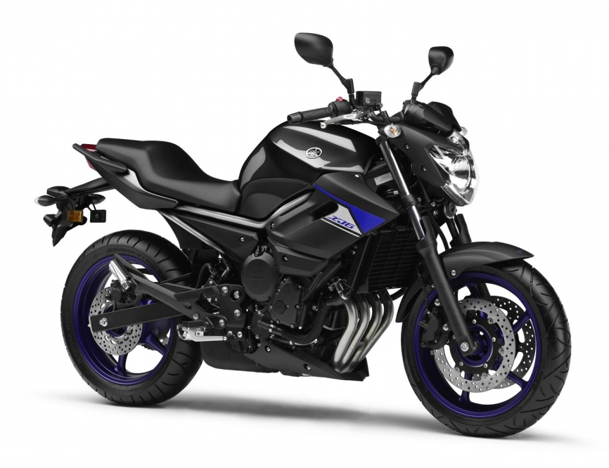

|  |
XJ6NL |
| |
|
| Engine Type |
600 cc, Liquid-cooled, 4-stroke, DOHC, 4-valve, forward-inclined parallel 4-cylinder |
| Compression Ratio |
12.2 : 1 |
| Fuel Tank Capacity |
17 L |
| Transmission |
6-speed |
| |
|
| Length |
2120 mm |
| Width |
770 mm |
| Height |
1085 mm |
| |
|
| Suspension Front |
Telescopic fork with 130mm travel |
| Suspension Rear |
Monocross with 130mm travel |
| |
|
| Brakes Front |
298mm dual discs |
| Brakes Rear |
245mm single disc |
| |
|
| Tyres Front |
120/70 ZR17 MC (58W) |
| Tyres Rear |
160/60 ZR17 MC (69W) |
| |
|
| comment |
he XJ6 is tuned for strong torque character and medium speed agility rather than ultimate high-rpm performance. Like every Yamaha, it retains an exciting edge, a high level of enjoyment and usability, and unquestionable quality levels. |
| |